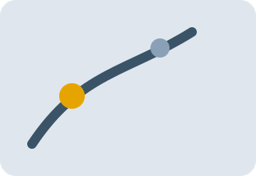
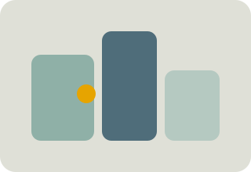
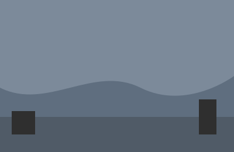
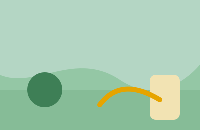
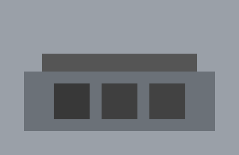
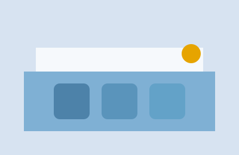
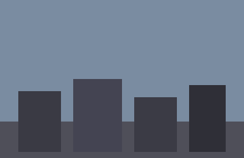
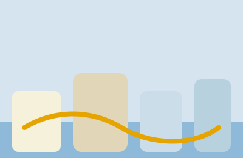

ビジョン
「まちの未来資産を育む」を掲げ、環境と暮らしを両立するインフラづくりを進めます。

豪雨被害やインフラ老朽化など、地域が抱える課題をヒアリングとデータで徹底分析。
防災・環境・都市計画の専門家がワンチームとなり、課題別の施工計画を立案します。

完成後のデータモニタリングで、CO2削減や維持コストの変化をレポート。信頼が次のプロジェクトへ。
「まちの未来資産を育む」を掲げ、環境と暮らしを両立するインフラづくりを進めます。
地域と協働し、誰もが安心して暮らせる社会基盤を提供し続けること。
各分野のプロフェッショナルが、現場で即応し品質を守ります。
公共施設から住宅まで100件以上の現場を指揮。安全と品質を第一に施工をリード。
環境配慮設計の専門家。再生可能エネルギー活用建築で受賞歴多数。
BIMとIoTを活用し、現場と本社の情報連携を高速化。品質検査の自動化を実現。
課題：毎年浸水被害が発生する河川流域
解決：治水機能を持つ公園整備と透水性舗装


課題：老朽化した校舎と高いエネルギーコスト
解決：ZEB化とICTインフラ整備による省エネ＆学習環境の高度化


課題：利用者減と沿線空洞化
解決：駅前複合施設と交通結節点の整備で人流を回復


ご相談や資料請求は以下のフォームよりお気軽にお問い合わせください。